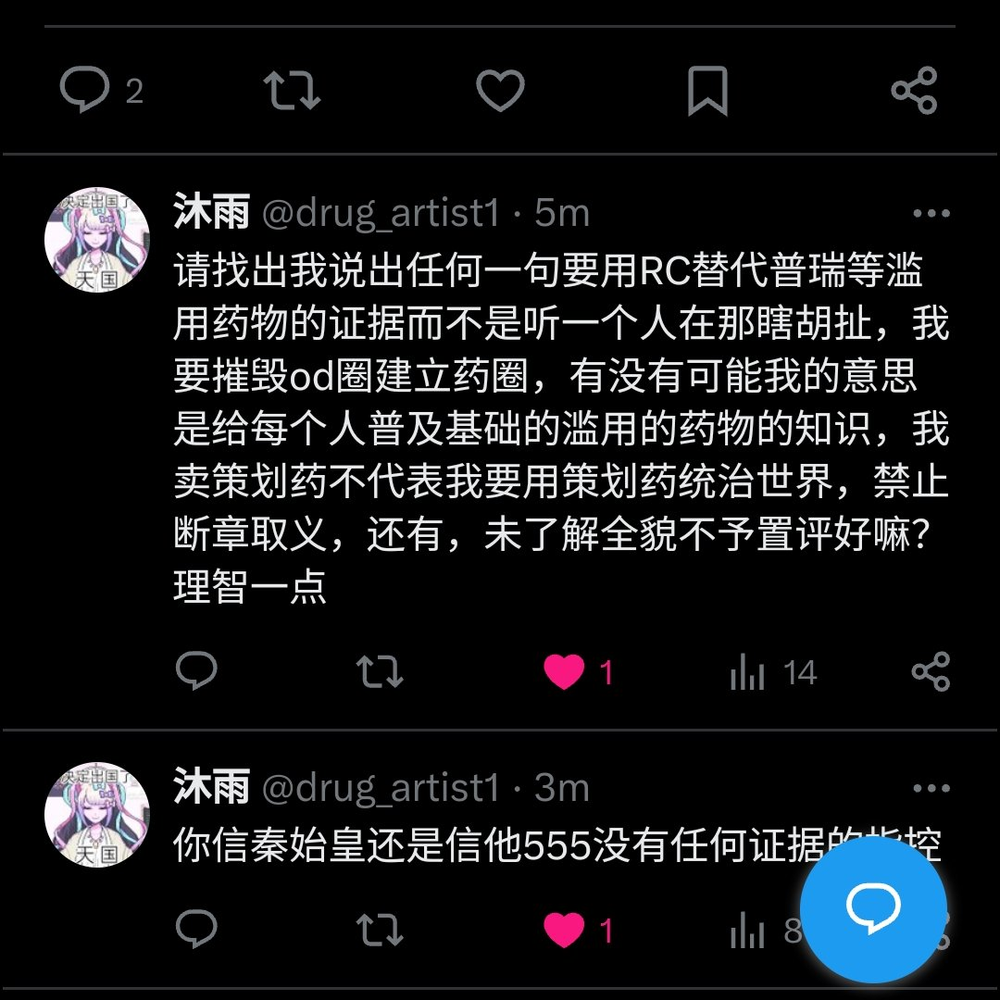

鼠尾草～🌿
@SalviaSWC
我承认我不太记得清细节了，但是你把历史贴子删了，还叫我找证据，这就很可疑。
欢迎对这个贴子留有截图的推u们把截图发出来，让我们重新回忆一下整件事情，而不是仅仅让沐雨自己一个人记得自己说了什么话。(可以发评论区，私信窝也可以)

沐雨
@drug_artist1
@SalviaSWC @overdosewiki 请找出我说出任何一句要用RC替代普瑞等滥用药物的证据而不是听一个人在那瞎胡扯，我要摧毁od圈建立药圈，有没有可能我的意思是给每个人普及基础的滥用的药物的知识，我卖策划药不代表我要用策划药统治世界，禁止断章取义，还有，未了解全貌不予置评好嘛？理智一点